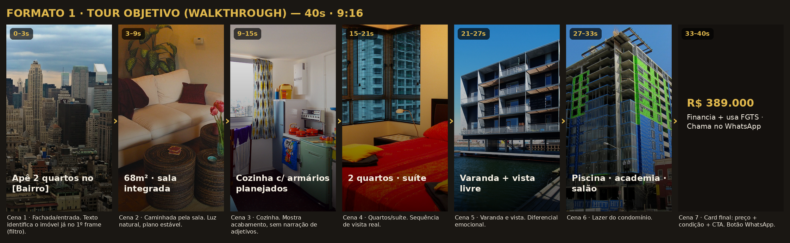
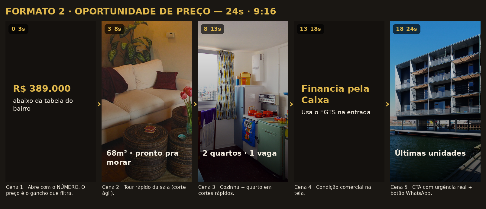
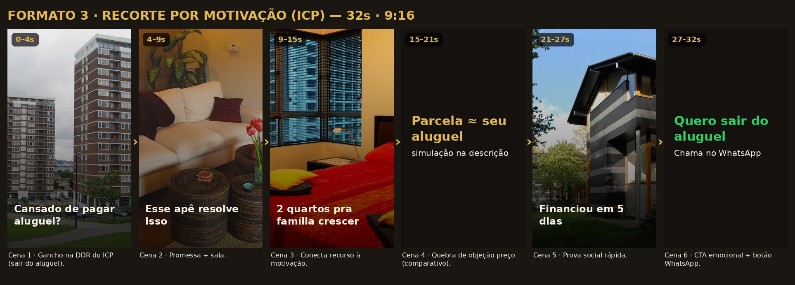

Cada formato segue os 3 elementos do método: o imóvel é o protagonista, o gancho filtra o curioso e os qualificativos aparecem cedo. Grave na ordem das cenas, com o celular na horizontal travado em vertical (9:16), boa luz natural e movimentos lentos. O texto na tela é parte do filtro — não é enfeite.
1. O 1º frame é sempre o imóvel (nunca seu rosto). 2. Texto na tela com o qualificativo já nos primeiros 3s. 3. Planos estáveis (apoie o celular ou use gimbal). 4. Sem trilha “viral”; áudio limpo ou legenda. 5. Termine sempre com preço/condição + CTA para o WhatsApp.
O mais versátil. O comprador “visita” o imóvel antes de te chamar — por isso chega aquecido. Use para médio/alto padrão e prontos para morar.

| Tempo | Cena / plano | Texto na tela | Narração / legenda (opcional) |
|---|---|---|---|
| 0–3s | Fachada ou entrada do prédio (plano de aproximação) | Apê 2 quartos no [Bairro] | — |
| 3–9s | Caminhada pela sala integrada, luz natural | 68m² · sala integrada | “Sala ampla, integrada com a cozinha.” |
| 9–15s | Cozinha: panorâmica dos armários e bancada | Cozinha c/ armários planejados | “Cozinha já com planejados.” |
| 15–21s | Quartos e suíte (abrir porta, mostrar espaço) | 2 quartos · suíte | “Dois quartos, sendo uma suíte.” |
| 21–27s | Varanda e vista (giro lento mostrando o entorno) | Varanda + vista livre | “Varanda com vista livre.” |
| 27–33s | Área de lazer do condomínio | Piscina · academia · salão | “Lazer completo no condomínio.” |
| 33–40s | Card final (tela com fundo do imóvel desfocado) | R$ 389.000 · financia + FGTS | “Quer ver pessoalmente? Chama no WhatsApp.” + botão |
Curto e direto. O herói é a condição comercial. Gera urgência genuína em quem já está no mercado de compra. Abre com o número.

| Tempo | Cena / plano | Texto na tela | Narração / legenda |
|---|---|---|---|
| 0–3s | Card de abertura com o preço grande | R$ 389.000 — abaixo da tabela do bairro | “Esse aqui saiu por R$ 389 mil.” |
| 3–8s | Tour rápido da sala (corte ágil) | 68m² · pronto pra morar | — |
| 8–13s | Cozinha + quarto em cortes rápidos | 2 quartos · 1 vaga | — |
| 13–18s | Card de condição | Financia pela Caixa · usa FGTS | “Financia pela Caixa e usa o FGTS na entrada.” |
| 18–24s | Varanda/vista + CTA | Últimas unidades · WhatsApp | “Me chama no WhatsApp antes que acabe.” + botão |
O gancho é a dor do ICP, não o imóvel em si. O mais poderoso quando você conhece bem a motivação dominante (ex.: sair do aluguel).

| Tempo | Cena / plano | Texto na tela | Narração / legenda |
|---|---|---|---|
| 0–4s | B-roll emocional (casal/chaves) + gancho na dor | Cansado de pagar aluguel? | “Cansado de pagar aluguel a vida toda?” |
| 4–9s | Promessa + sala do imóvel | Esse apê resolve isso | “Esse apartamento resolve isso.” |
| 9–15s | Quarto / espaço (conecta recurso à motivação) | 2 quartos pra família crescer | “Dois quartos pra família crescer.” |
| 15–21s | Card comparativo aluguel × parcela | Parcela ≈ seu aluguel | “A parcela fica parecida com o aluguel que você já paga.” |
| 21–27s | Prova social (chave na mão / cliente) | Financiou em 5 dias | “Um cliente financiou em 5 dias.” |
| 27–32s | CTA emocional | Quero sair do aluguel · WhatsApp | “Bora sair do aluguel? Me chama.” + botão |
Grave todos os planos de uma vez (15–20 min por imóvel) e monte os 3 formatos a partir do mesmo material, trocando só a abertura e o texto. Um dia de captação vira semanas de criativos.